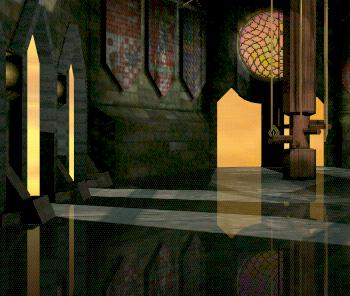

GRAPHICS
|

Creating 3D graphics for use in a 'real-time' environment requires special skills, considerations, and tools. Bäcchus has devoted a great deal of effort to addressing these issues. We have written an extensive set of tools that allows models to be imported into the engine from high-end modelers, complete with complex lighting, geometry, textures, and animations. With our experience in 3D scene design, these tools allow rapid generation of high-resolution, awe-inspiring visuals that can be explored and navigated in real 3D space. |